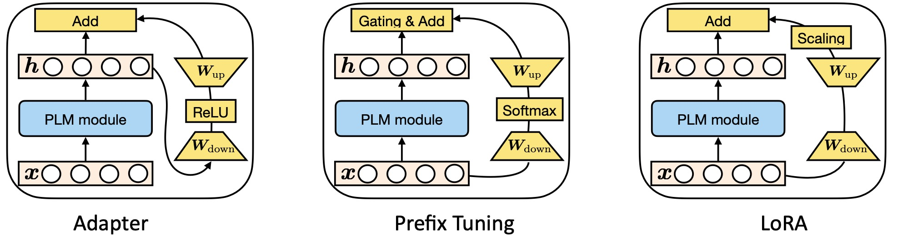

这两天读了一些(两篇..)关于Parameter Efficient的文章，结构并不复杂，但是感觉还是有些内容可以分享。
什么是参数高效的迁移学习呢？
在自然语言处理的任务中，目前各个任务中常用的方法普遍基于Transformer模型，更具体来说，基于以Transformer的backbone模型的大规模预训练模型,以此为基础在各种任务上进行fine-tuning。通常情况下，
会对所有的模型参数进行微调，当然，通过这样的方式，可以更容易使得模型达到比较好的效果。因此也是大多数工作所进行的方式。
但是呢，这就会衍生出一个问题，首先，训练和部署效率的问题，先说训练，对于全局模型进行微调势必会消耗大量算力以及有一点点费电，那当然也可以通过frozen预训练模型在下有任务微调，这就和今天的主题有些相似了。另外呢，如果有很多很多的任务，你对每一个任务都进行fine-tuning，然后部署保存模型，对于现在动辄billion级别的模型参数来说，比如说你一个模型10GB，那你有100个任务，则需要1TB的存储量。
这时候，如果我们可以插入一小部分网络结构并且只对这一小部分进行微调就能达到一个比较好的效果，岂不美哉。
因此关于这部分的内容就应运而生。
关于这方面的工作，比较有代表性的是：
The Power of Scale for Parameter-Efficient Prompt Tuning主要是在输入端的vector前面加几个特殊的vector并且在训练的时候对其进行微调。
Parameter-efficient transfer learning with diff pruning基于稀疏矩阵的梯度来做的，概括来说就是找到一些比较重要的参数，只对这些参数进行优化。
BitFit: Simple Parameter-efficient Fine-tuning for Transformer-based Masked Language-models只对模型的bias进行训练。
前面三个工作实际上效果比较一般，效果比较好的工作有以下几个：
Parameter-efficient transfer learning for NLP提出了基于adapter的一个微型的插件网络（插入预训练模型的内部）
Prefix-tuning: Optimizing continuous prompts for generation和prompt的方式类似，不同点是它在每一层的输入端都perpend了特殊的vector标记。而prompt只在第一层输入端perpend了特殊的vector。
Lora: Low-rank adaptation of large language models采用了低秩的矩阵。
由下图所示展示了这三种方法的图例：
最左面的网络结构中，我们可以看到，三种结构在Transformer模型对应位置的结构，其中adapter作用于attention结构和fnn结构的连接处。Lora是在隐状态层后计算attention之前加入低秩矩阵。而对于Prefix tuning是在得到key向量和value向量时prepend上特殊的prefix vector实现。
现在思考一个问题：虽然它们在形式上是不太相同的，那么它们是否会具有一些联系？或者它们有什么本质上比较相似的共性呢？
对于Prefix tuning来说：参考如下示意图：

通过新增的prefix来构造hidden state。与原始的attention的计算方式相比，我们可以看到
因此，我们可以将其化简得到如下表达式：
其中 $\lambda$：
在进一步的化简，我们可以得到如下的表达式：
对于$\Delta h$一项，显然它就是query对于prefix的attention。
我们在分析Adapter部分的内容：
其中 $f$是激活函数(relu),在这里，我们已经感觉到了二者之间的相似性，其实都是对$h$加上了一个线性变换的矩阵。我们可以进一步将prefix部分的公式进行化简：
因此化简后穿的prefix公式为：
在这种情况下，我们可以认为prefix tuning是一种特殊的adapter。
同样，我们对Lora部分进行了分析。
略去分析部分，三者之间的一些特性可以由下表总结得出：
我们可以发现其最终在数据的流向上，Adapter的数据流向是串行的，其它两种数据的流向为并行的，总结修改到的模型的位置，三张对应的图如下所示:

有了这样的总结，我们希望可以进一步去观察哪一些的设计是更有效的，因此，在三个数据集上，采用了一些通用的模型结构，进行了实验，分别是：
- XSum: abstracJve English text summarizaJon, BART-large
- WMT16 English -> Romanian translaJon, mBART-large
- MNLI, SST2, RoBERTa-base (skipped in the slides)
首先对并行和串行的插入方式进行了实验：
由结果可知，大部分情况下，并行的插入方式要优于串行的插入方式。
在这种情况下，在adapter上进行重新设计，使串行结构变为并行结构，如图所示：
再者，对插入位置进行了分析，在不通的插入位置采用不通数量的参数进行分析
由实验结果可知，在全连接层的修改要优于在注意力层的修改。
另外，对于在adapter参数量上的一些实验，只用0.1%的参数量和更对的参数量的adapter会造成多大影响？
我们可以看到，其在多头下影响较小，而单头的情况下略大。并且在FFN层的影响更为巨大，猜想是因为FFN部分的参数多，保留的信息多，因此影响大。
参考文献 Towards a Unified View of Parameter-Efficient Transfer Learning